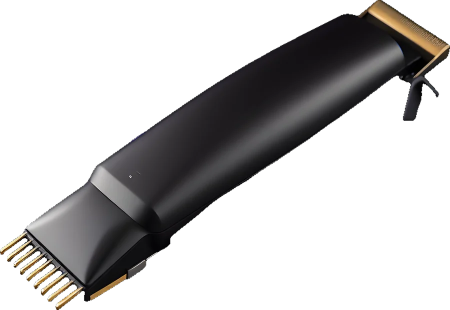
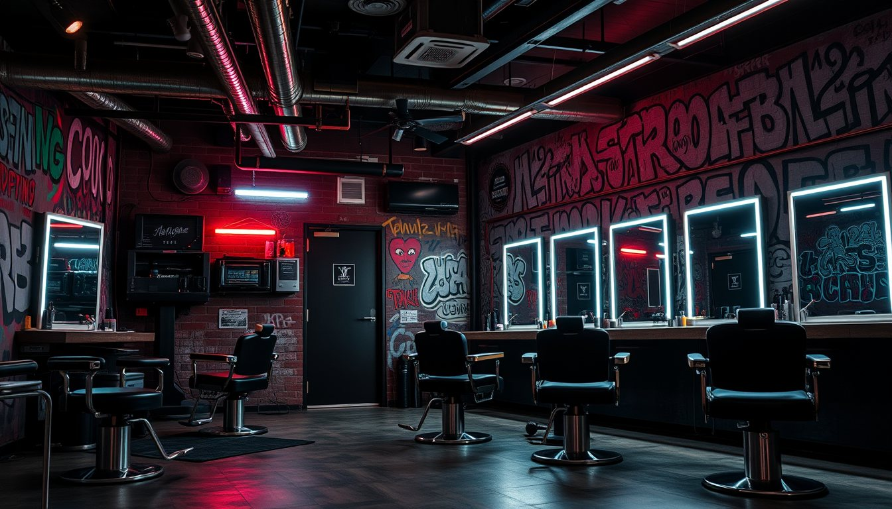
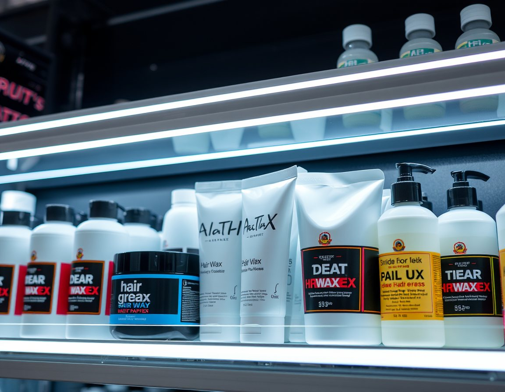

Stil katalog
Fotoğrafını getirmen yeter. Kafa yapına göre en yakın stili birlikte seçeriz.

Skin Fade
Yanlar sıfırdan başlayıp ten görünümüne iner, üst uzunluk korunur. En net geçiş.
Süre45 dk
Numara0 → 3
Tekrar2–3 hf

Fotoğrafını getirmen yeter. Kafa yapına göre en yakın stili birlikte seçeriz.
Yanlar sıfırdan başlayıp ten görünümüne iner, üst uzunluk korunur. En net geçiş.



Saat seç, adını bırak. Randevuna 10 dk geç kalırsan sıradaki müşteriye geçiyoruz.